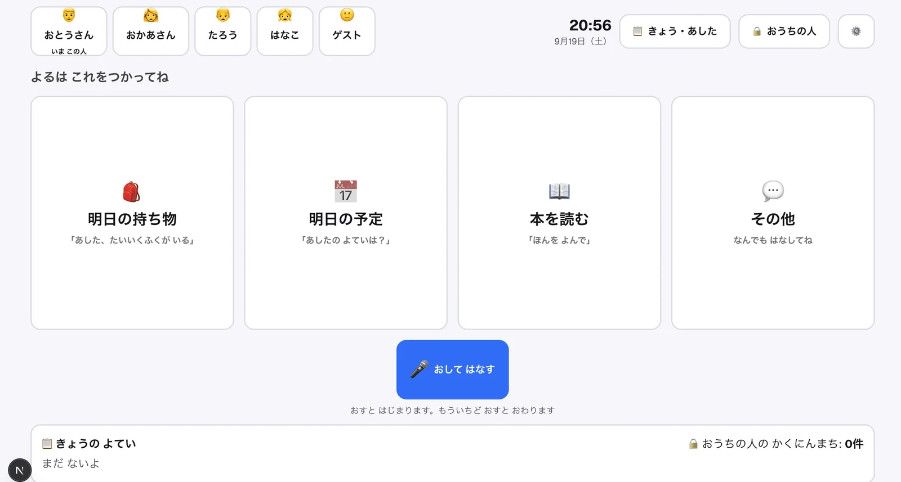

体験
リビングのiPadを、家族の誰かが言ったことを共有の情報へ変える案内板にしている。子どもが使う画面で、判断の結果をそのまま確定させない工夫が、入力から登録まで3段に重なっている。
- 1段目は音声の確認。聞き間違いをそのまま予定にしないため、文字起こしを見せてから送る。
- 2段目は聞き返し。作者は、確信度が低いときは聞き返し、親の確認が必要なときは確認箱へ回すと書いている。閾値や聞き返しの文面は示されていない。
- 3段目は親の承認。作者は理由を、AIを信用していないからではなく、「明日」と「明後日」の取り違えだけでも持ち物なら実害があるからだと説明している。
- 「このこたえ、ちがう」のボタンを用意し、間違いが起きる前提で、親があとから確認できるようにしたと書いている。ボタンを押した後に何が起きるかは記事に出ていない。
- 画面はひらがな中心で、カードごとに話し方の例文が付く。下端の「かくにんまち」の件数が、承認待ちがあることを家族に知らせる。
- 通知の自動送信やカレンダーへの書き込みは、まだ入れていないと作者は書いている。
キャプチャ
{kind=link}

（原寸の画像を開く）見る箇所上部の家族の切り替え（「いま この人」の表示）、右上の「きょう・あした」と鍵の付いた「おうちの人」、時間帯の見出し「よるは これをつかってね」、例文付きの4枚のカード、「おして はなす」のボタンと操作の説明、下端の「おうちの人の かくにんまち: 0件」
入力から画面の変化まで
-
判断への入力
子どもがカードを押して入力した文字、またはマイクで話した内容の文字起こし（例:「明日、牛乳パックいる」）。音声は、文字起こしを画面に出して「これで合ってる？」と確かめてから送る。
-
Jevの判断
持ち物・予定・宿題・質問・天気などの候補から発話の意図を選ぶ。対象者が子どもか家族全体かも候補から判定する。候補を並べられない言葉（「牛乳パック」など）と日時の表現はGeminiが抽出し、日付への変換はコードが計算する。
-
結果がUIをどう変えるか
確信度が低いときは聞き返す。登録は子どもが直接確定できず、親の確認箱に入る。親はタイトルや日付を直してから承認でき、承認前のものは「きょう・あした」の画面に出ない。
- 判断型の見立て
- Choice推定
- 持ち物・予定・宿題・質問・天気などの候補から発話の意図を選び、対象者も候補から判定する、という説明からの見立て。記事はChoice・Score・Noulを一般的に説明するが、実装で使った型は明記していない。
Jevとの適合
発話を決まった種類へ仕分ける部分だけをJevに任せ、自由な語の抽出はLLM、日付の確定はコード、登録の確定は親、と役割を分けている。判断の誤りを、確認・聞き返し・承認・あとからの訂正で受け止める構成は、家庭のように誤登録の影響が読みにくい場面に合う。ただし、子どもの言い間違いや途切れた発話での挙動は、作者自身がこれからの課題としている。
確認範囲と未確認事項
日本語の作者によるnote記事と、記事内の画面画像1枚を確認。作者が家庭用に作成中のアプリで、公開サイトやリポジトリは示されていない。掲載した画面はホームの1枚だけで、聞き返し、親の確認箱、「このこたえ、ちがう」のボタンは記事の本文による説明である。作者は、テストの結果は自分で用意した評価ケースに対するもので、家庭での正解率ではないと書いている。
- 確認済み記事本文、記事内の画面画像1枚（ホーム画面）に見える家族の切り替え、4枚のカードと例文、音声入力のボタン、「かくにんまち」の件数表示
- 未検証文字起こしの確認画面、聞き返しの画面と条件、親の確認箱と編集・承認の画面、「このこたえ、ちがう」の動作、Jevへの質問文と候補、判定の正しさ、実際の家庭での利用
- 推定扱い質問型（候補から意図と対象者を選ぶという説明からChoiceと見立て）。記事はChoice・Score・Noulを一般的に説明しているが、実装でどれを使ったかは明記していない
- 引用記事内の画像を引用。画面の家族名は「おとうさん」「たろう」などの一般的な呼び名で、実名ではない。権利は作者に帰属する